Selección técnica
Analizamos tu fuente de agua y tu proceso para dimensionar el equipo correcto, sin sobredimensionar.
Water Tech · Ingeniería en tratamiento de agua
Soluciones de tratamiento de agua para industria, comercio y hogar. Respaldo técnico de principio a fin.
Quiénes somos
Importadores directos y fabricantes de soluciones de tratamiento de agua. Selección técnica, equipamiento y acompañamiento.
Analizamos tu fuente de agua y tu proceso para dimensionar el equipo correcto, sin sobredimensionar.
Filtración, membranas, desinfección y cargas filtrantes en un solo sistema, con repuestos disponibles.
Instalación, mantenimiento y acompañamiento continuo en todo el Ecuador.
Soluciones por sector
Desde una planta de proceso continuo hasta el agua de tu cocina. Misma ingeniería, distinta escala.
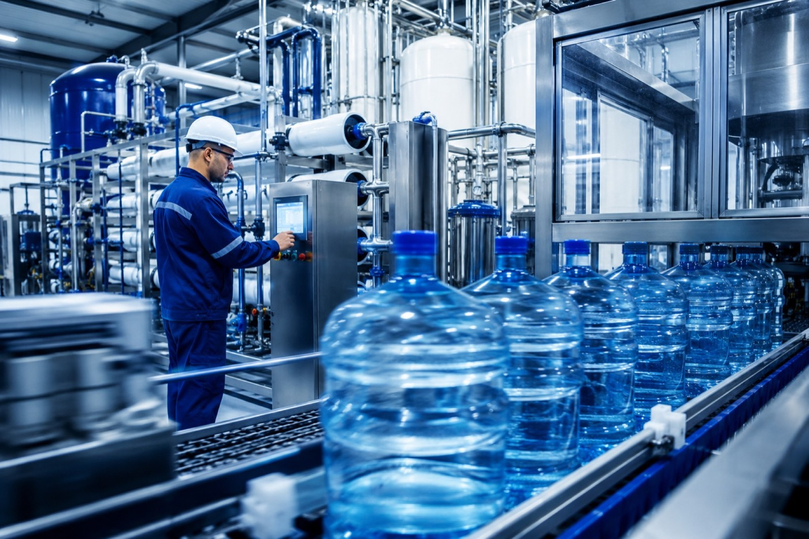
01 / IndustrialPlantas de tratamiento, procesos continuos y sistemas a medida para caudales exigentes.
Ver soluciones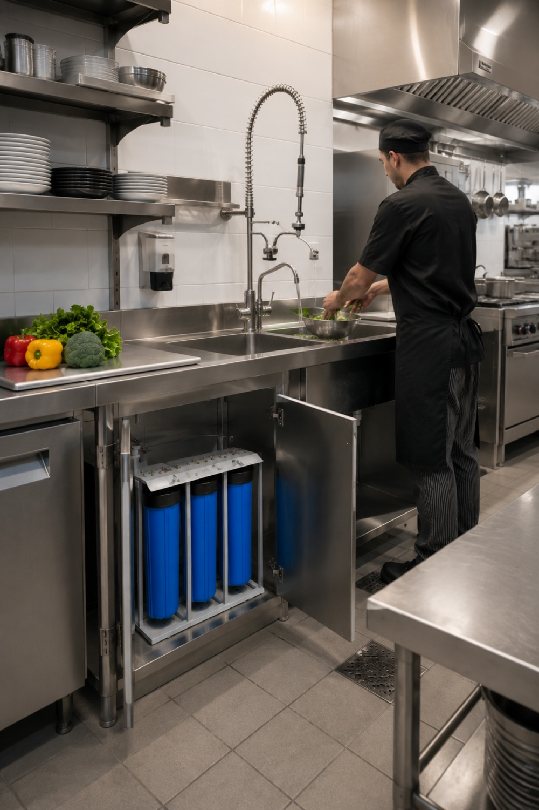
02 / ComercialEquipos para restaurantes, alimentos, laboratorios y servicios con consumo continuo.
Ver soluciones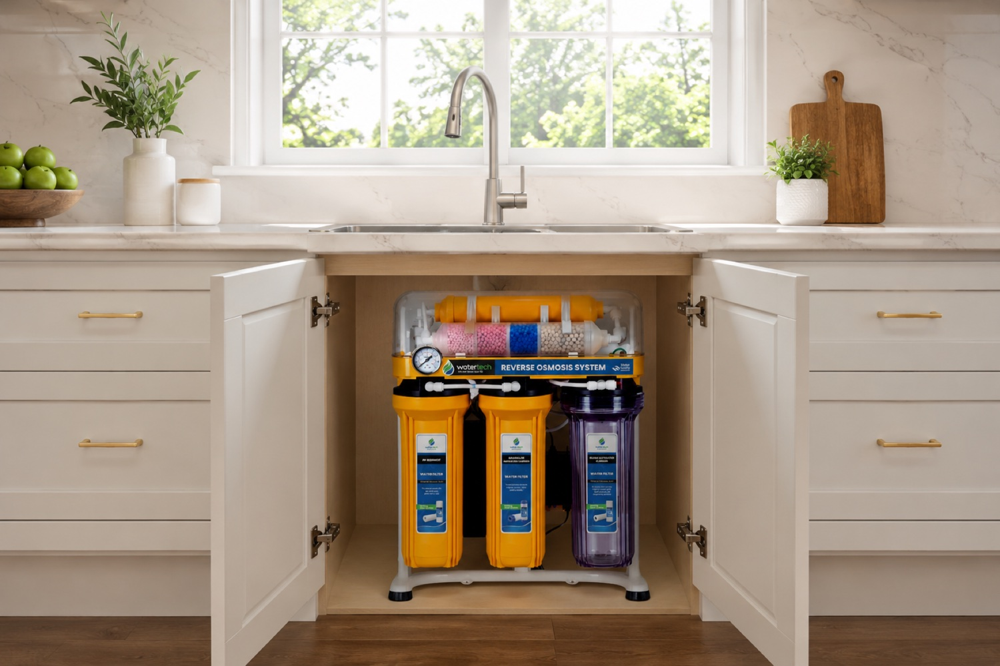
03 / ResidencialPurificación práctica para el consumo diario, con instalación y mantenimiento incluidos.
Ver solucionesLo que hacemos
Analizamos tu fuente, dimensionamos el sistema y nos hacemos cargo del montaje, la puesta en marcha y el mantenimiento.
Estudiamos tu fuente de agua y tu proceso para definir caudal, calidad y tecnología, sin sobredimensionar.
Filtración, membranas, desinfección y cargas filtrantes integradas en un solo sistema, con repuestos disponibles.
Instalamos, calibramos y dejamos el equipo operando, con tu personal capacitado para la operación diaria.
Cambio de cargas, membranas y consumibles, con soporte técnico y stock local en todo el Ecuador.
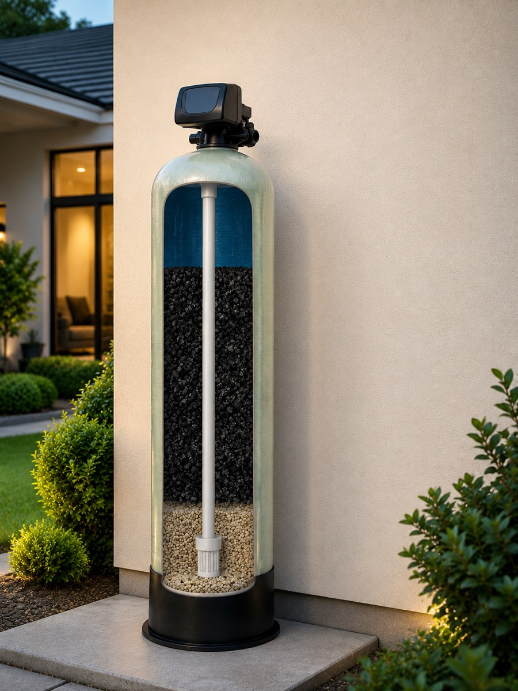
Proyectos
Desde una planta embotelladora completa hasta el sistema de filtración de un local. Todos montados y mantenidos por nuestro equipo.
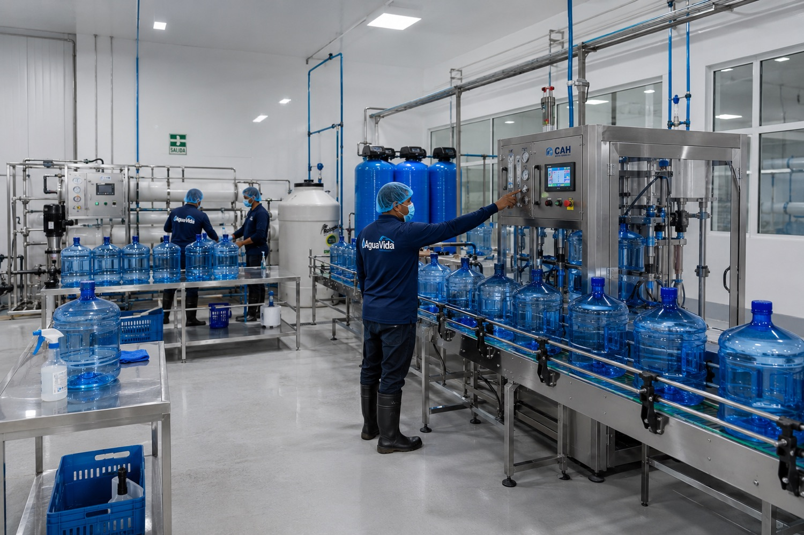
IndustrialTratamiento, desinfección y área de llenado integrados en una sola instalación.
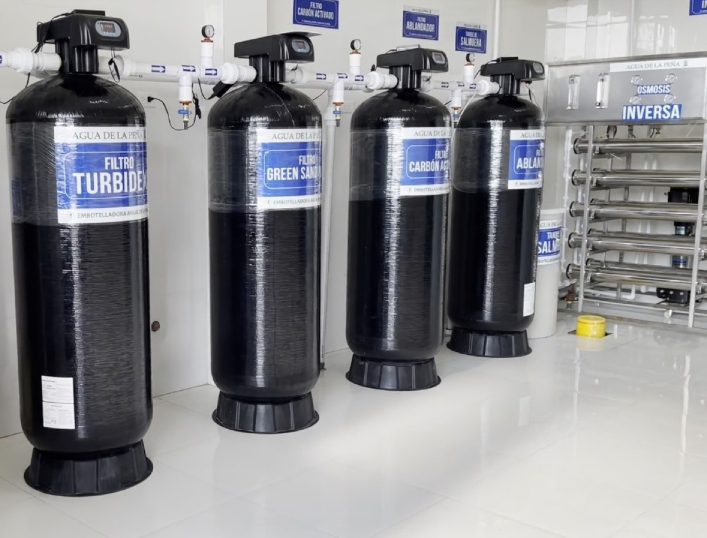
IndustrialTurbidez, green sand, carbón activado y ablandador trabajando en paralelo.
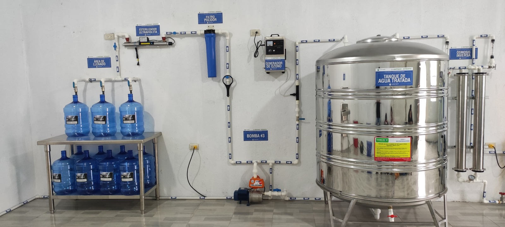
ComercialEsterilización ultravioleta, generación de ozono y tanque de agua tratada.
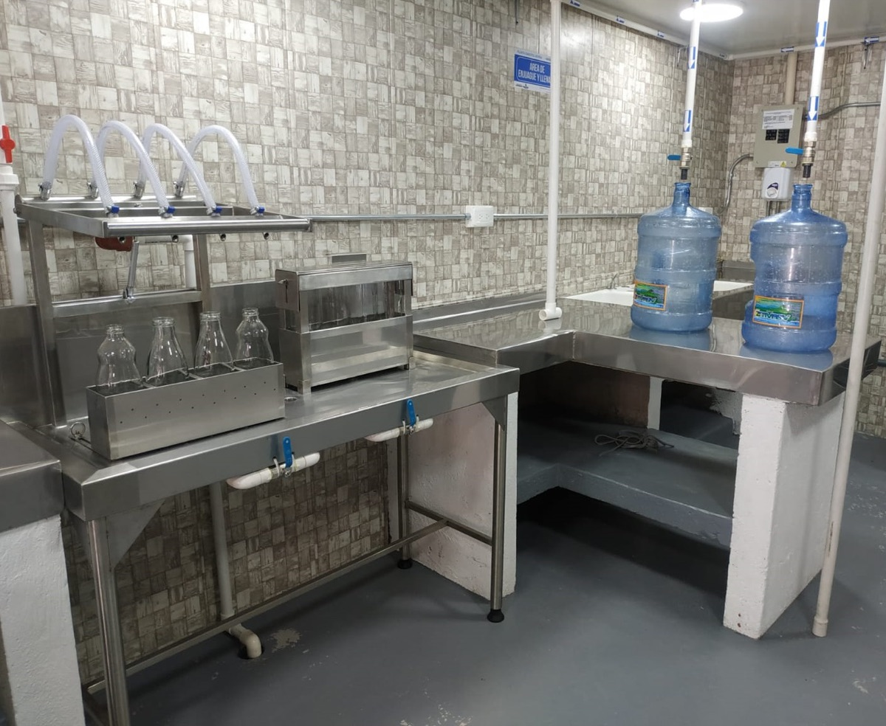
ComercialMesa de llenado con enjuague y filtro pulidor para garrafones y botellones.
Catálogo
Seis líneas de producto que van desde la carga filtrante hasta la planta completa, con stock local y repuestos a mano.
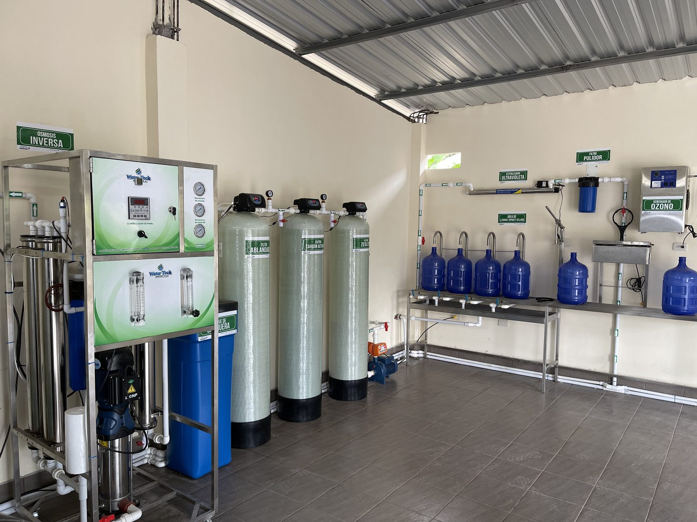
Alto caudal y configuración a medida para procesos continuos.
Ver categoría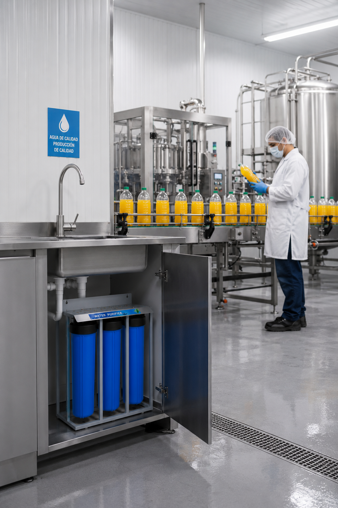
Purificación para restaurantes, alimentos, laboratorios y servicios.
Ver categoría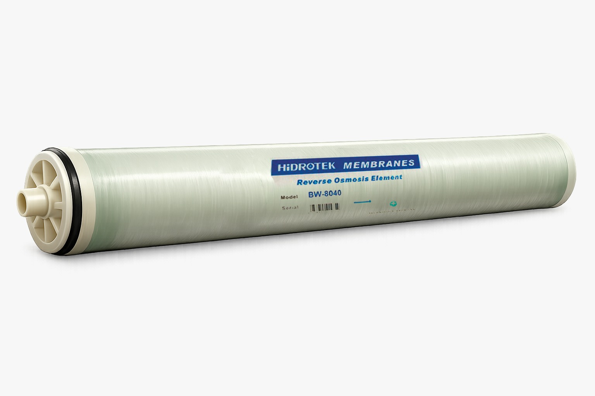
Ósmosis inversa y ultrafiltración con repuestos disponibles.
Ver categoríaDesinfección ultravioleta y generación de ozono, sin químicos.
Ver categoría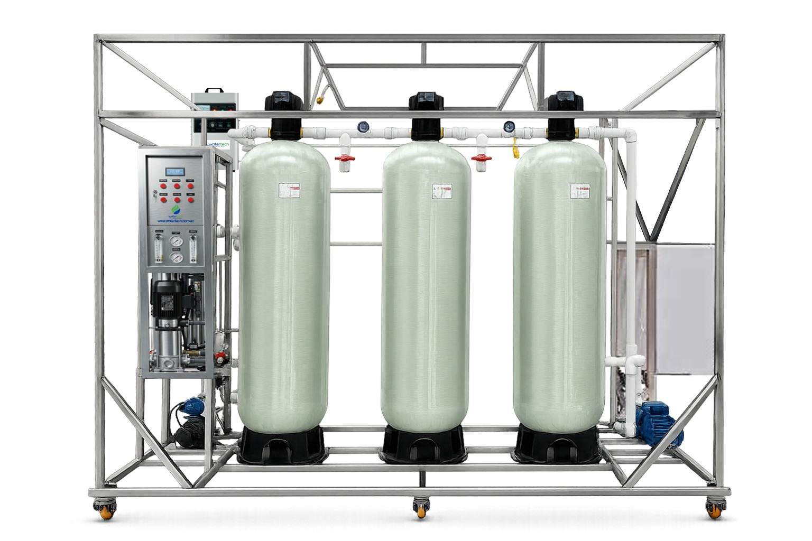
Grava, antracita, carbón activado y resinas para tus tanques.
Ver categoría
Consumibles, accesorios y servicio técnico para tu equipo.
Ver categoríaContacto
Revisamos tu caso, dimensionamos el equipo y te enviamos una propuesta con alternativas, tiempos y respaldo técnico.